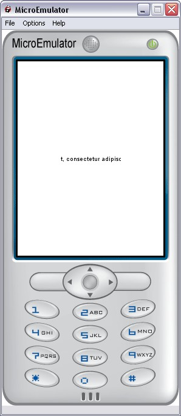

Ticker prototype for Tiny Mobile Widgets

Text looping animation.
Animation will only start if text is larger than the size of the Ticker.
Data fields
- SFVec2f translation - Position of the ticker
- SFVec2f size - Size of the display area
- MFString string - The text to display
Style fields
- SFColor textColor - Color of the text
- SFInt32 margin - Margin from the left side where to begin text
- SFNode fontStyle - Font of the text to display
Control fields
- SFInt32 speed - Speed of animation (pixels per second). Animation can be stopped with a value less or equal to 0. Default: 2